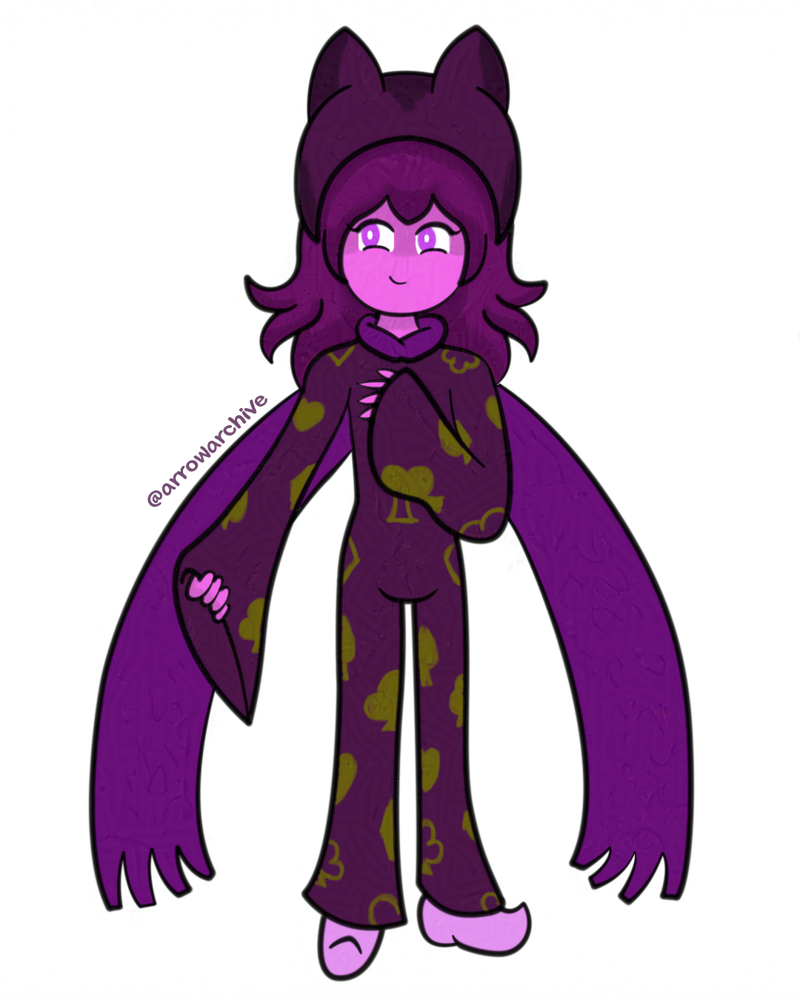

Introducing: Nihilus
Before switching to my iPad, there was a null period where I didn't focus on any big projects and worked on a few smaller ones instead. Two pieces came from this period: Electra's redesign, and the concept for Nihilus.
Nihilus is a part of a group called "the Chess Knights" and I planned to draw all of them in the same picture, but she was the only one I finished before I got my iPad. I gave up on drawing them together and saved her design for later. This came in handy on Halloween, since I had the basics of her personality written and I tweaked her concept to fit the occasion. I'll explain more on that post.
I have a few more notes about her design. Her hat and scarf are parts of her and will act or react based on her behavior. This was inspired by a show I watched growing up called Hero: 108, where one character had a companion with her named "Yaksha" that looked like a hat and scarf combined. It was a very obscure show, but one that inspired me nonetheless. Her clothes don't show any emotion here because I was hesitant to go through with the idea. I decided to use it in the Halloween piece, which captured the more intense side of her personality. My drawing of her in 2021 captures her sweeter side.
Her design and personality are complex, but the magical aspect of her character makes it worth the effort.